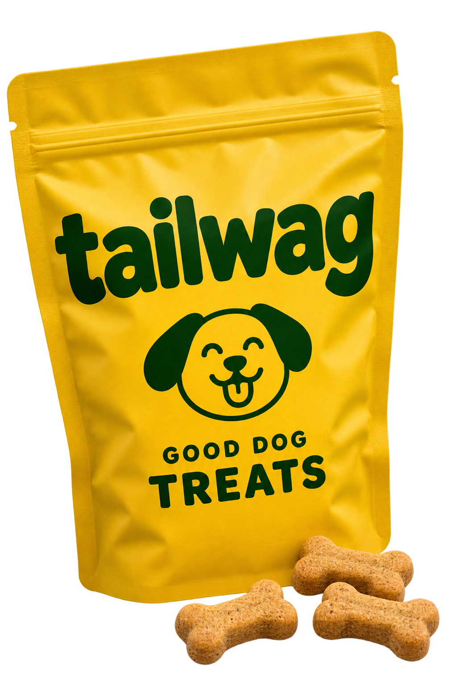
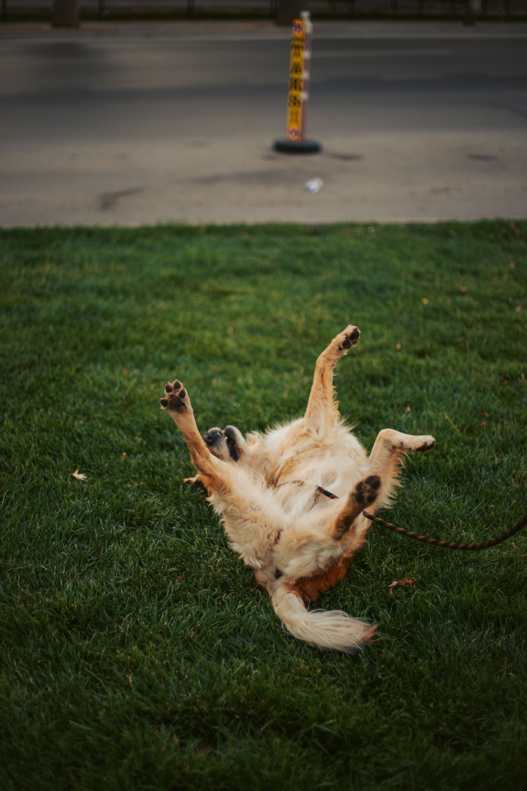

Nog één
rondje dan.
De riem gaat aan. De wereld gaat open.
Bekijk de Wandel-edit
Geen haast. Wel kwispels.
Een klein moment voor de deur, een nieuw paadje en tijd om overal even te snuffelen. Het hoeft niet groots te zijn om zijn dag te maken.
Samen op pad
Geef je hond de tijd om de omgeving te ontdekken.
Een fijn moment
Een traktatie hoort bij jullie moment, niet bij haast.
Tot de volgende kwispel.

Bekijk de Wandel-edit